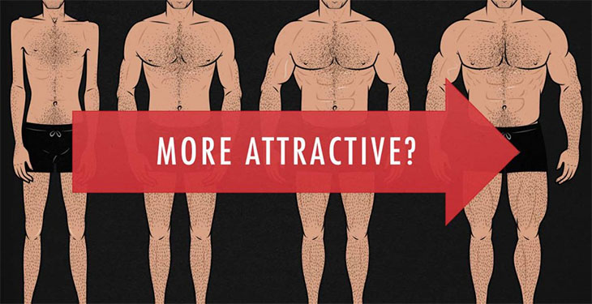

A pesar de que la atracción romántica es algo complicado y que los científicos aún no comprenden por completo, los estudios demuestran que estas 19 cosas hacen que los hombres sean más atractivos para las mujeres.
A través de la investigación y la experimentación, han surgido muchas ideas sobre lo que atrae a una persona hacia otra.
A continuación, reunimos algunas de las ideas científicas más convincentes sobre los rasgos y comportamientos que hacen que los hombres sean más atractivos para las mujeres.
¿La mejor parte? Ninguno de los elementos de esta lista requiere que se someta a una cirugía estética o una revisión importante de la personalidad. Estamos hablando de pequeños cambios, como actuar mejor y cambiar tu desodorante.
Sigue leyendo para conocer formas sencillas de mejorar tus citas.
La antropóloga y autora de best-sellers de la Universidad de Rutgers, Helen E. Fisher, dice que las mujeres de todo el mundo muestran interés con una secuencia de expresiones notablemente similar.
Como compartió en Psychology Today:
"Primero, la mujer sonríe a su admirador y levanta las cejas con un movimiento rápido y entrecortado mientras abre los ojos de par en par para mirarlo. Luego deja caer los párpados, inclina la cabeza hacia abajo y hacia un lado, y mira hacia otro lado. También se cubre la cara con las manos, riendo nerviosamente mientras se retira detrás de las palmas.
"Este gesto de coqueteo secuencial es tan distintivo que [el etólogo alemán Irenaus] Eibl-Eibesfeldt estaba convencido de que es innato, una estratagema de cortejo femenino humano que evolucionó hace siglos para señalar interés sexual".
Los hombres, y las mujeres, se sienten atraídos por personas que son tan atractivas como ellas.
En un estudio, investigadores de la Universidad de California en Berkeley observaron el comportamiento de 60 usuarios heterosexuales en un sitio de citas en línea. Si bien la mayoría de los usuarios se inclinaban por llegar a personas muy atractivas, era más probable que obtuvieran una respuesta si esa persona era tan atractiva como ellos (según lo juzgaban evaluadores independientes).
"Si buscas a alguien aproximadamente [igual] a tí en atractivo, se evitan dos cosas", dijo a The Independent el psicólogo Mark Sergeant, de la Universidad de Nottingham Trent, que no participó en el estudio. "Si son mucho más guapos que tú, te preocupa que se vayan y tengan aventuras. Si son mucho menos atractivos, te preocupa que puedas hacerlo mejor".
Un estudio de 2010 del Instituto de la Universidad de Gales encontró que los hombres fotografiados con un Bentley Continental GT plateado eran percibidos como mucho más atractivos que aquellos con un Ford Fiesta ST rojo.
Y un estudio de 2014 de la Universidad Metropolitana de Cardiff encontró que los hombres fotografiados en un apartamento de lujo fueron calificados como más atractivos que los de un grupo de control.
Curiosamente, los hombres no parecen sentirse más atraídos por las mujeres cuando se las representa en un contexto de alto estatus.
Los psicólogos lo llaman el "efecto George Clooney".
Un estudio de 2010 de 3.770 adultos heterosexuales sugirió que las mujeres a menudo prefieren a los hombres mayores. A medida que las mujeres se volvieron más independientes económicamente, dijeron que les gustaban aún más los hombres mayores.
"Creemos que esto sugiere que una mayor independencia financiera da a las mujeres más confianza en las opciones de pareja y las atrae hacia hombres mayores poderosos y atractivos", dijo en un comunicado la autora principal y psicóloga de la Universidad de Dundee, Fhionna Moore.
Los psicólogos evolucionistas dicen que las mujeres más jóvenes y los hombres mayores a menudo se emparejan porque, si bien la fertilidad solo dura desde la pubertad hasta la menopausia en las mujeres, puede extenderse hasta la mediana edad para muchos hombres. La sociedad también brinda a los hombres una mayor oportunidad de acumular estatus y recursos a medida que envejecen.
En un estudio de 2013 de investigadores de la Universidad de Nueva Gales del Sur, los investigadores hicieron que 177 hombres heterosexuales y 351 mujeres heterosexuales miraran imágenes de 10 hombres en una de cuatro condiciones: bien afeitado, barba corta, barba media o barba completa. Los participantes calificaron a los hombres en la foto según varios rasgos, incluido el atractivo.
Las mujeres decían que la longitud de barba más atractiva era una barba incipiente.
"El vello facial se correlaciona con la madurez y la masculinidad", escriben los autores Barnaby J. Dixson y Robert C. Brooks.
"Un nivel intermedio de barba es más atractivo", añaden.
En un estudio de 2007 de la Universidad de California en Los Ángeles, 286 mujeres miraron fotografías de hombres sin camisa e indicaron cuáles parecían ser las mejores parejas a largo y corto plazo.
Los resultados mostraron que las mujeres eran más propensas a querer relaciones a corto plazo con los hombres que tenían músculos grandes.
¿La señal evolutiva podría estar funcionando aquí?
Características como la musculatura son "señales de genes que aumentan la viabilidad de la descendencia o el éxito reproductivo", dicen los autores David A. Frederick y Martie G. Haselton.
Pero Frederick y Haselton se llevaron otro hallazgo revelador: Less-muscuSe pensaba que los hombres mayores se adaptaban mejor a las relaciones a largo plazo. Entonces, si desea llamar la atención de una mujer y mantener su atención, es mejor que no se exceda.
Uno de los hallazgos mejor documentados en psicología es el efecto halo, un sesgo en el que inconscientemente tomas un aspecto de alguien como aproximación de su carácter general. Es por eso que creemos que las personas hermosas son buenas en su trabajo, incluso cuando no lo son necesariamente.
Como señala el psicólogo y escritor Scott Barry Kaufman, el efecto halo también funciona de otras maneras.
En un estudio chino de 2014, más de 100 jóvenes observaron imágenes de rostros de hombres y mujeres y las calificaron según su atractivo. Cada rostro en la foto estaba emparejado con una palabra que describía un rasgo de personalidad positivo, como amabilidad u honestidad, o un rasgo de personalidad negativo, como ser malvado o mezquino.
Los resultados mostraron que las personas descritas con rasgos positivos fueron calificadas como más atractivas.
"Aunque la belleza es una evaluación del valor de la aptitud, no hay ninguna razón por la que la evaluación de la aptitud deba ser puramente física", escribe Kaufman, lo que significa que actuar con amabilidad puede hacer que parezca más atractivo.
Un estudio transcultural de 2010, con participantes de China, Inglaterra, Alemania y los EE. UU., encontró que las mujeres se sienten más atraídas por los hombres vestidos de rojo.
En un experimento del estudio, 55 estudiantes universitarias miraron una foto en color de un hombre con una camisa roja o verde y luego calificaron el atractivo del hombre.
Efectivamente, el hombre fue calificado significativamente más atractivo cuando vestía una camisa roja. Los resultados fueron similares cuando los investigadores también compararon la camisa roja con camisas de otros colores.
Curiosamente, los participantes generalmente no sabían que el color de la ropa del hombre estaba influyendo en sus percepciones de su atractivo.
Múltiples estudios indican que las mujeres se sienten más atraídas por hombres que pueden hacerlas reír. Curiosamente, sin embargo, los hombres generalmente no se sienten más atraídos por las mujeres que pueden hacerlos reír.
En un estudio de 2006 publicado en la revista Evolution and Human Behavior, los investigadores pidieron a los estudiantes de pregrado (no indicaron su orientación sexual) que indicaran cuánto valoraban la capacidad de una pareja para hacerlos reír y su propia capacidad para hacer reír a su pareja.
Los resultados mostraron que las mujeres valoraban tanto el sentido del humor de su pareja como su propia capacidad para hacer reír a su pareja; los hombres valoraban solo su propia capacidad para hacer reír a su pareja.
En un experimento de 2014 del Centro Académico Ruppin en Israel y la Universidad de Michigan, 100 mujeres israelíes leyeron viñetas sobre hombres.
Algunos de los hombres fueron descritos como "cads": engañaban a su pareja y se metían en peleas. Los otros hombres fueron descritos como "papás" estereotipados: trabajarían duro en su trabajo y cuidarían bien de sus hijos.
Siempre que la historia presentaba a un canalla que tenía un perro, las mujeres calificaban a ese hombre como un compañero a largo plazo más adecuado que un canalla que no tenía un perro. Los papás con perros incluso se calificaron un poco más atractivos que los papás sin perros.
Los investigadores concluyeron que tener una mascota es una señal de que eres cariñoso y capaz de hacer compromisos a largo plazo. También puede ayudarlo a parecer más relajado, accesible y feliz.
En 2014, investigadores de la Universidad de Sussex pidieron a unas 1.500 mujeres (cuya edad promedio era de 28 años) que escucharan piezas musicales simples y complejas y calificaran el atractivo del compositor.
Los resultados mostraron que las mujeres preferían la música más compleja y dijeron que elegirían al compositor de la música más compleja como pareja a largo plazo.
Investigadores australianos estudiaron recientemente a estudiantes universitarios que participaban en una sesión de citas rápidas y encontraron que los hombres atentos tendían a recibir calificaciones más altas de atractivo por parte de las mujeres.
Antes de que comenzara la sesión, se les pidió a 91 estudiantes que llenaran un cuestionario de mindfulness en el que indicaban cuánto estaban de acuerdo con afirmaciones como:
Después de cada interacción con una pareja del sexo opuesto, los estudiantes indicaron en privado lo "sexy" que encontraron a su pareja y cuánto les gustaría salir con esa persona.
Los resultados mostraron que los hombres generalmente se sentían más atraídos por mujeres físicamente atractivas. (Los codificadores independientes habían evaluado el atractivo de los estudiantes de antemano). Pero las mujeres en general se sentían más atraídas por los hombres más atentos.
Un estudio de 2014 dirigido por investigadores de la Universidad de Alaska en Anchorage encontró que las mujeres se sienten atraídas por los hombres que toman lo que los investigadores llaman "riesgos de cazadores-recolectores".
Más de 230 estudiantes universitarios completaron cuestionarios sobre qué tan atractivo encontrarían una pareja que participara en ciertos comportamientos de riesgo, en contraposición a una pareja que participara en comportamientos de bajo o ningún riesgo.
Los riesgos de los cazadores-recolectores incluían el ciclismo de montaña, el buceo en alta mar y el patinaje extremo. Los riesgos "modernos" incluían plagiar un trabajo académico, manipular sustancias químicas de manera casual en un laboratorio y no actualizar el software de protección contra virus en su computadora.
Los comportamientos de bajo o ningún riesgo incluyeron andar en bicicleta por caminos pavimentados y manejar con cuidado los productos químicos en una clase de laboratorio de química.
Los resultados mostraron que las mujeres dijeron que se sentirían más atraídas por los hombres que se involucraban en riesgos de cazadores-recolectores, del tipo que eran similares a los riesgos que enfrentan los humanos ancestrales. Las mujeres dijeron que se sentirían menos atraídas por los hombres que se involucren en riesgos modernos, lo que podría parecer simplemente tonto.
El simple hecho de saber que estás usando una nueva fragancia puede hacerte actuar con más confianza e incluso hacerte parecer más atractivo para otras personas.
En un pequeño estudio de 2009 publicado en el International Journal of Cosmetic Science, los investigadores le dieron a un grupo de estudiantes universitarios un aerosol con ingredientes antimicrobianos y aceite de fragancia, y le dieron a otro grupo un aerosol sin perfume que no contenía ingredientes antimicrobianos. Durante los días siguientes, los hombres que usaron el spray perfumado informaron de una mayor confianza en sí mismos y se sintieron más atractivos.
¿La parte extraña? Cuando a un grupo de mujeres se les mostraron videos silenciosos de los hombres, encontraron más atractivos a los que usaban spray perfumado, aunque obviamente no podían olerlos. Los investigadores determinaron que los hombres que usaban el spray perfumado mostraban un comportamiento más seguro, lo que a su vez los hacía más atractivos.
El olor a ajo en tu aliento generalmente se considera un asesino instantáneo del romance. Pero una serie reciente de estudios, de investigadores de la Universidad Charles y el Instituto Nacional de Salud Mental en la República Checa y la Universidad de Stirling en el Reino Unido, sugiere una historia diferente cuando se trata del olor corporal.
En un estudio, ocho hombres comieron una rebanada de pan con queso y 12 gramos de ajo fresco; otros ocho comieron pan y queso sin ajo. Durante las siguientes 12 horas, los hombres usaron almohadillas de algodón debajo de las axilas y se les indicó que no usaran desodorantes ni fragancias.
Al día siguiente, todos los hombres regresaron al laboratorio, donde 40 mujeres olieron las almohadillas y calificaron el olor según su agrado, atractivo, masculinidad e intensidad. Los resultados mostraron que el grupo del ajo fue calificado como más agradable y atractivo y menos masculino e intenso.
Un estudio de 2013 de investigadores del Reino Unido descubrió que las mujeres encuentran más atractivos a los hombres cuando realizan trabajo voluntario.
Unas 30 mujeres observaron una foto de un hombre con una breve descripción de sus pasatiempos, que a veces incluían trabajo voluntario. Se repitió el mismo procedimiento con unos 30 hombres mirando una foto de una mujer. Todos calificaron lo atractiva que encontraron a la persona en la foto para una relación a corto y largo plazo.
Ambos géneros calificaron a la persona representada como más atractiva para una relación a largo plazo cuando fueron descritas como voluntarias, pero el efecto fue más fuerte para las mujeres que calificaron a los hombres.
Esa cicatriz en tu barbilla de cuando te caíste de una bicicleta podría ayudarte a atraer pareja.
En un estudio de 2009, investigadores de la Universidad de Liverpool y la Universidad de Stirling tomaron fotos de 24 estudiantes universitarios masculinos y 24 femeninos. Manipularon digitalmente la mitad de las imágenes para que los sujetos parecieran tener cicatrices faciales, por ejemplo, una línea en la frente de la persona que parecía el resultado de una lesión.
Luego, los investigadores reclutaron a otro grupo de aproximadamente 200 estudiantes universitarios heterosexuales masculinos y femeninos para calificar a todas las personas fotografiadas en función del atractivo para las relaciones a corto y largo plazo.
Los resultados mostraron que los hombres con cicatrices parecían un poco más atractivos para las relaciones a corto plazo que los hombres sin cicatrices. Las mujeres, por otro lado, eran percibidas como igualmente atractivas independientemente de si tenían la cara con o sin cicatrices.
Un estudio de 2016, de investigadores de la Universidad de California, Berkeley, la Universidad de Stanford, la Universidad de Texas en Austin y la Universidad Northwestern, sugiere que nos atraen más las personas que muestran un lenguaje corporal expansivo.
En un experimento incluido en el estudio, los investigadores crearon perfiles para tres hombres y tres mujeres en una aplicación de citas basada en GPS.
En un conjunto de perfiles, se representaba a hombres y mujeres en posiciones de contracción, por ejemplo, cruzando los brazos o encorvando los hombros.
En el otro conjunto de perfiles, los mismos hombres y mujeres fueron representados en posiciones expansivas, como sostener sus brazos hacia arriba en forma de "V" o estirarse para agarrar algo.
Los resultados mostraron que las personas en posturas expansivas fueron seleccionadas como posibles citas con más frecuencia que aquellas en posturas contractivas. Este efecto fue ligeramente mayor para las mujeres que seleccionaron a los hombres.
Un estudio de 2011 de la Universidad de Columbia Británica reveló un hallazgo curioso: los hombres y mujeres heterosexuales prefieren diferentes expresiones emocionales en parejas potenciales.
En un experimento incluido en el estudio, los investigadores hicieron que casi 900 adultos norteamericanos miraran fotos de personas del sexo opuesto en línea.
Los investigadores estaban comparando específicamente las percepciones de las personas sobre las expresiones de orgullo, felicidad, vergüenza y neutralidad (otras personas ya habían identificado la emoción detrás de la expresión en la foto). Para las mujeres que evaluaban a los hombres, la expresión más atractiva era el orgullo y la menos atractiva era la felicidad.
Aún más extraño, una expresión de vergüenza era relativamente atractiva tanto para hombres como para mujeres.
Citas breves por video de 3 minutos.
Ahorra tiempo y establece conexiones reales.
Saber más